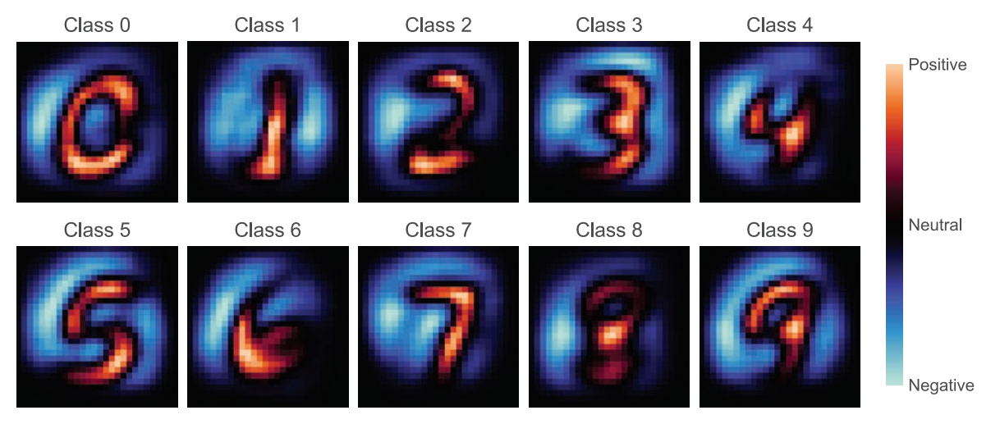

Han Wu, Embedded Machine Learning, Newcastle Uiversity
Tsetlin Machine is not translation invariant
Uncertainty Quantification on MCUs
Interpretability of Tsetlin Machines

Shende, Mayur Kishor, et al. "A Methodology for Transparent Logic-Based Classification Using a Multi-Task Convolutional Tsetlin Machine." 2025 International Symposium on the Tsetlin Machine (ISTM). IEEE, 2025.